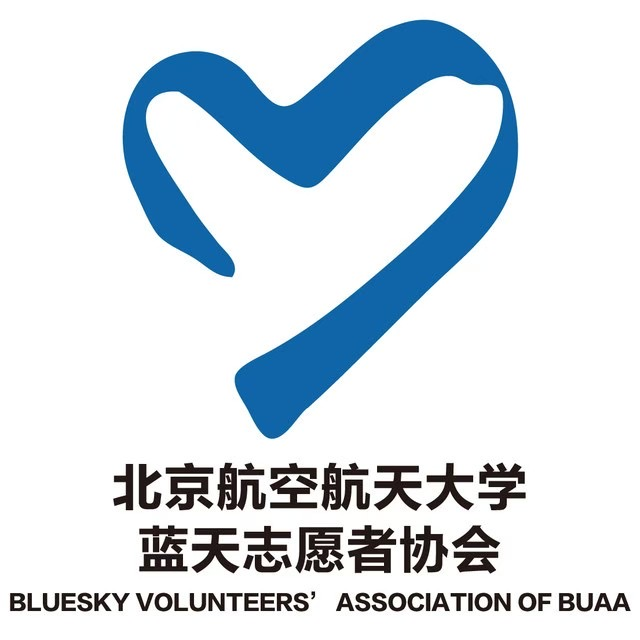
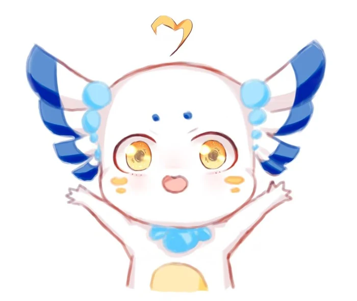
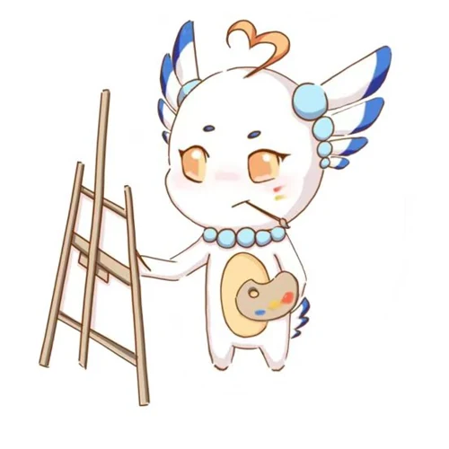
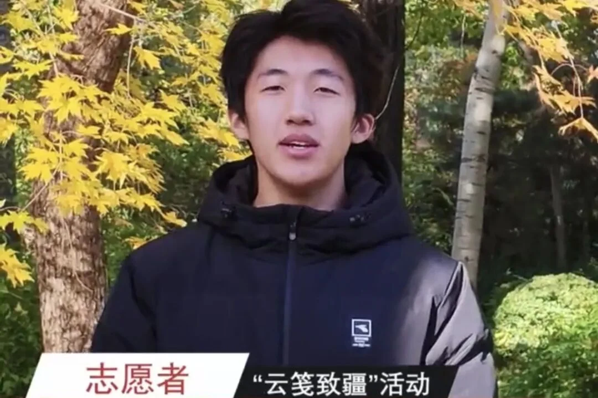
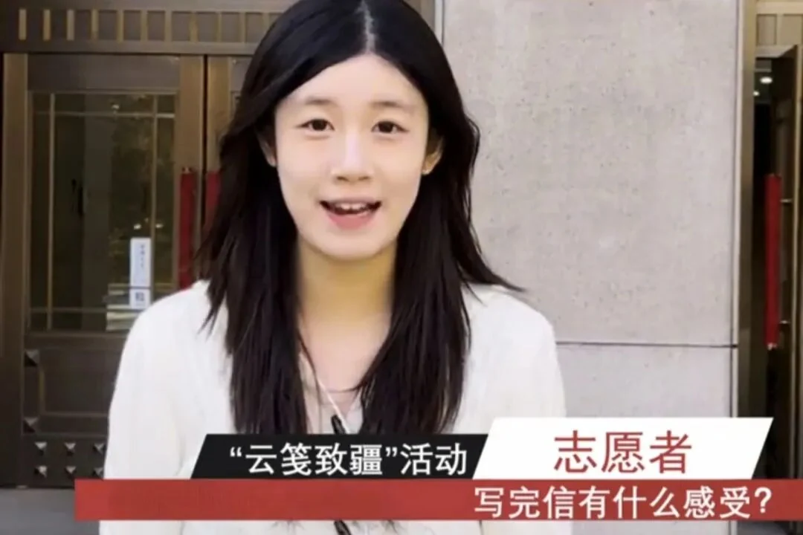
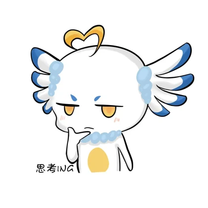

认真回应
先回答来信里的问题，再分享自己的经历。用自己的话亲笔书写，让对方感受到真实的你。

北京航空航天大学蓝天志愿者协会
你写下的日常，一纸信笺，跨越山海。
一次倾听，慢慢靠近。
01 / A LETTER CONNECTS US
“云笺致疆”是一场以手写书信为纽带的双向交流。
北京航空航天大学蓝天志愿者协会、北京航空航天大学研究生支教团吉木乃分团，联合新疆吉木乃县高级中学开展项目。北航学子与中学生一对一结对，在一次次通信中分享日常、回应困惑，也看见彼此的成长。
学习方法、专业趣事、校园生活、家乡风物……那些平凡却具体的片段，成为认识另一个世界的开始。
把大学生活与成长经验，写进回信。
听少年伙伴讲述他们的生活与期待。
02 / THE JOURNEY OF A LETTER
从认真读信，到用心回信。
每一程，都有人共同守护。
在项目组织下匹配通信伙伴，领取信纸、信封，了解书写要求。
一段交流，从相遇开始。展开来信，认真读懂对方的问题、兴趣和日常，先倾听，再提笔。
让每一份表达都有回应。用亲切、清晰的文字分享经历，用真实的日常与耐心的回答传递陪伴。
把“我在听”写进字里行间。由工作人员检查、扫描留存并统一封装寄送，让来信与回信继续往返。
在下一封信里，继续认识你。一封回信之后，仍有下一次倾听。
摊开的信纸、手边的笔，把注意力留给每一行文字。
俯身写下的每一笔，都是对远方来信的回应。
03 / SMALL THINGS, REAL CONNECTIONS
分享生活里的真实片段，
也为对方留出讲述的空间。

蓝小咕的书信灵感角话题 / 01
一条常走的校园小路、一次社团活动，或课堂上让你眼前一亮的小知识。把它讲得具体一点，让远方的伙伴也能“看见”。
“最近有没有一件小事，让你特别开心？”
书信话题示意，非真实往来信件。
04 / THE LETTERS WE KEEP
从书写现场，到信纸与小物。
翻一翻这些真实发生过的日常。
左右滑动翻阅 · 轻点照片放大
活动照片由协会提供。信纸保留完整画面，可在大图中放大阅读。
05 / WORDS FROM THE WRITERS
写信的人，也在收获一段真诚的相遇。

往期志愿者分享希望这封信能像一座小桥，连起我们俩，让远方的朋友也能感受到这份挂念和温度。
王梓豪 · 24级志愿者

往期志愿者分享我迫不及待地想和他分享北航秋天金黄的银杏大道，也渴望聆听他窗外雪山的四季故事。
赵晨伽 · 25级志愿者
图片与分享文字摘自协会往期项目推送。读完整故事 ↗
06 / THE CARE BETWEEN THE LINES

先回答来信里的问题，再分享自己的经历。用自己的话亲笔书写，让对方感受到真实的你。
亲切表达，耐心倾听，尊重彼此的生活与文化。把交流放在日常里，让成长发生在对话中。
通过项目统一收发信件，不在信中交换私人联系方式。用有边界的陪伴，让交流安心、长久。
THE NEXT LETTER COULD BE YOURS
如果你愿意倾听，也愿意认真回应，
就从认识“云笺致疆”开始。
关注「北航蓝天志愿者」公众号，
了解项目动态与当期参与方式。
A FEW MORE WORDS
项目连接北航在校大学生与新疆吉木乃县高级中学的学生，由蓝天志愿者协会、北航研究生支教团吉木乃分团与对接学校共同组织。
当然。比起华丽的辞藻，项目更看重真诚、耐心与责任心。项目会提供信纸、信封与书写培训，具体参与要求请查看当期通知。
先回应对方来信中提到的问题，也可以分享学习方法、专业趣事、大学日常或家乡特色。语言亲切、清晰，尊重彼此的经历和文化。
关注「北航蓝天志愿者」微信公众号，查看项目当期推送中的报名与通信指引。每一期的安排、材料领取和书写要求，以协会通知为准。
世界很大。
一封信，就能让我们近一点。